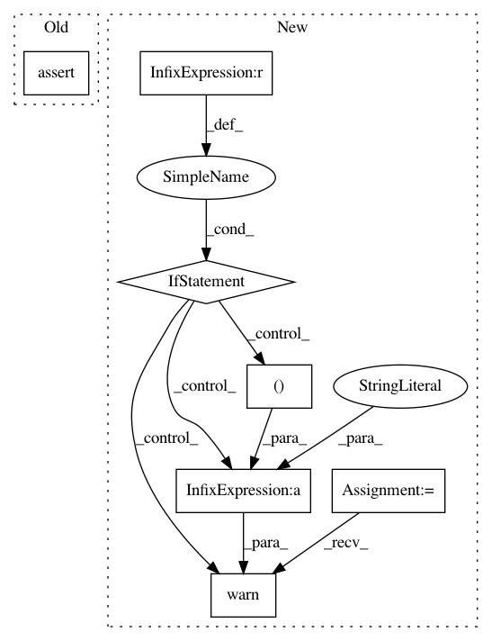

5f85518f21f3aa7b7f16145636cd5db9408905f3,imgaug/augmentables/heatmaps.py,HeatmapsOnImage,__init__,#HeatmapsOnImage#Any#Any#Any#Any#,36
Before Change
ia.do_assert(len(shape) in [2, 3],
"Argument "shape" in HeatmapsOnImage expected to be 2d or 3d, got shape %s." % (shape,))
ia.do_assert(min_value < max_value)
ia.do_assert(np.min(arr.flat[0:50]) >= min_value - np.finfo(arr.dtype).eps,
("Value range of heatmap was chosen to be (%.8f, %.8f), but found value below minimum in first "
+ "50 heatmap array values.") % (min_value, max_value))
ia.do_assert(np.max(arr.flat[0:50]) <= max_value + np.finfo(arr.dtype).eps,
("Value range of heatmap was chosen to be (%.8f, %.8f), but found value above maximum in first "
+ "50 heatmap array values.") % (min_value, max_value))
After Change
ia.do_assert(len(shape) in [2, 3],
"Argument "shape" in HeatmapsOnImage expected to be 2d or 3d, got shape %s." % (shape,))
ia.do_assert(min_value < max_value)
if np.min(arr.flat[0:50]) < min_value - np.finfo(arr.dtype).eps \
or np.max(arr.flat[0:50]) > max_value + np.finfo(arr.dtype).eps:
import warnings
warnings.warn(
("Value range of heatmap was chosen to be (%.8f, %.8f), but "
"found actual min/max of (%.8f, %.8f). Array will be "
"clipped to chosen value range.") % (
min_value, max_value, np.min(arr), np.max(arr)))
arr = np.clip(arr, min_value, max_value)
if arr.ndim == 2:
arr = arr[..., np.newaxis]
self.arr_was_2d = True
else:
In pattern: SUPERPATTERN
Frequency: 4
Non-data size: 7
Instances
Project Name: aleju/imgaug
Commit Name: 5f85518f21f3aa7b7f16145636cd5db9408905f3
Time: 2019-03-30
Author: kontakt@ajung.name
File Name: imgaug/augmentables/heatmaps.py
Class Name: HeatmapsOnImage
Method Name: __init__
Project Name: erikbern/ann-benchmarks
Commit Name: d09ac00e4e99526e0e80178277201d11600ec581
Time: 2015-07-02
Author: erikbern@spotify.com
File Name: test/test.py
Class Name:
Method Name: check_algo
Project Name: ilastik/ilastik
Commit Name: 4f522587d73c77037864ffe7b60476f24e6f80d0
Time: 2012-12-16
Author: bernhard.kausler@iwr.uni-heidelberg.de
File Name: ilastik/applets/dataSelection/dataSelectionGui.py
Class Name: DataSelectionGui
Method Name: imageLaneAdded
Project Name: openml/openml-python
Commit Name: e5b23ed5e9a12d9571e8a0f82a3cee1598281a77
Time: 2017-03-06
Author: janvanrijn@gmail.com
File Name: openml/runs/functions.py
Class Name:
Method Name: _run_task_get_arffcontent